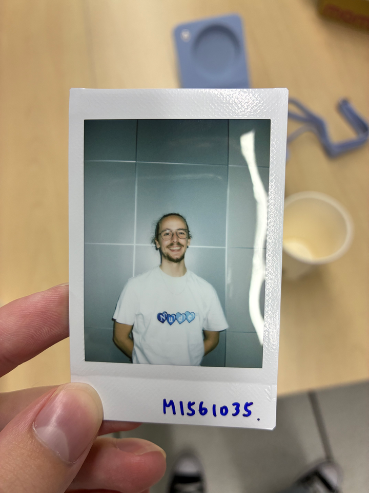
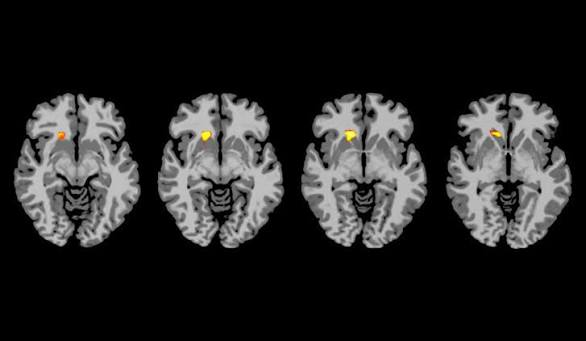

À propos de moi
Je suis étudiant en cycle ingénieur (niveau Master) à l'ECAM LaSalle, spécialisé en IA à l'Université Chang Gung. Je m'intéresse tout particulièrement au monde du divertissement, à la danse et aux jeux vidéo. J'aime travailler sur des projets qui allient l'ingénierie, la technologie et la résolution créative de problèmes.

Mon parcours
Quelques lieux, projets et expériences qui m'ont façonné.
ECAM LaSalle, France
Diplôme d'ingénieur en robotique
Université Chang Gung, Taïwan
Master en IA
Barman
Ninkasi Part-Dieu, Lyon
Expérience pendant mon année sabbatique comme barman à Lyon, en France. Une bonne expérience concrète du travail d'équipe et de la gestion du temps.
Stage en data science
FranceAir
Aide à la vérification des données de la base de données et du site web de l'entreprise. Apprentissage des méthodes de nettoyage et de vérification des données.
Sur quoi je travaille

[En cours] Mémoire sur l'utilisation de l'IA pour diagnostiquer le TDAH
Comment utiliser l'IA pour diagnostiquer le TDAH chez les enfants et les adultes, et comment améliorer la précision du diagnostic.
Ma contribution : L'article en est encore à ses débuts, mais je travaille actuellement sur la revue de littérature et la méthodologie.
Restons en contact
Mon travail, mes recherches ou mes projets vous intéressent ? N'hésitez pas à me contacter.